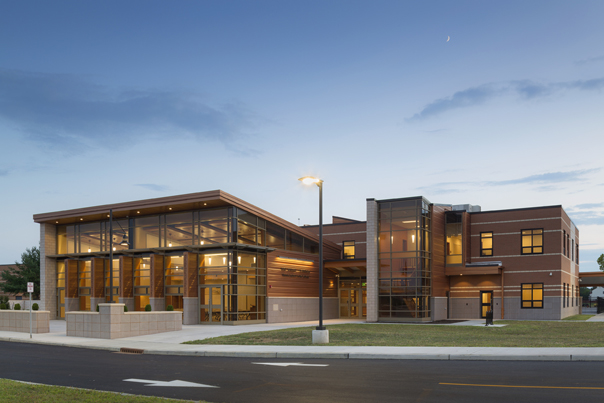

Campus Life
Campus Image

School Church
Was established in 1978
The purpose is to assist in the nurture, care and spiritual feeding of children in a Church School class setting. To share one’s faith with others and share God’s story as related to us in the Old and New Testament as well as what we believe as. Church is open daily and is free to all students, as we believe all can pray and wish and allow their own beliefs to flow. Being away from home doesn't mean you have to be away from your traditions and religions. All kind and respectful students are welcome here.

School Library
Was built in 1980
Since 1980 uptil now, dozens of students come everyday to fill their minds with knowledge. Almost every single kid who comes to the library weekly has found a boost in their grades and studies. Our library provides a variety of books, allowing students to make their own selection and also practicing responsiblity on returning books. Many different styles of writing and art are found in our many books, providing inspiration towards other kids who are passionate about learning and reading. All kind and respectful students are welcome here.

School Auditorium
Was built in 1982
The school auditorium is a beautiful and wonderful place for students to socialize. Every term many after school clubs preform and share the what they have learnt in the past several weeks. It is the perfect time to go onto stage and show the world what you've got, or sit back and admire and relate to other students. It's the perfect place to share talents and to socialize amongst classmates who have a desire to talk with one another. We all should share our knowledge and talent and the auditorium allows us to do so. All kind and respectful students are welcome here.